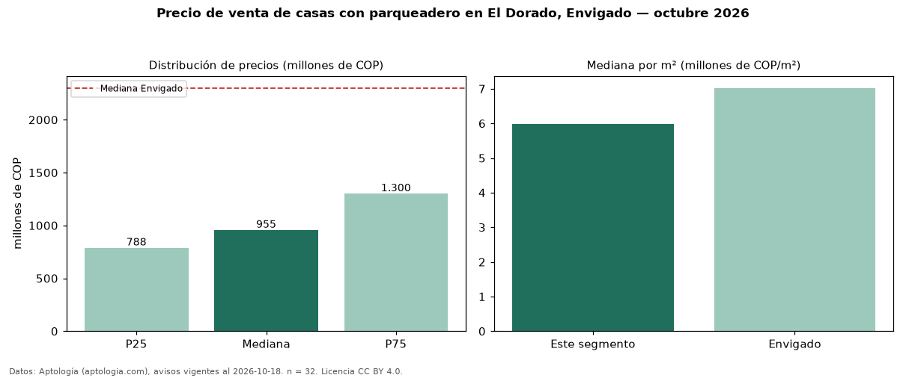

Precio de venta de casas con parqueadero en El Dorado, Envigado — octubre 2026
COP 955 millones es el precio mediano de casas con parqueadero en venta en El Dorado, Envigado (n = 32 avisos). Eso es 9 % más que la mediana de todas las casas en venta de El Dorado (COP 875 millones, n = 45); este segmento reúne el 71 % de esos avisos. Por metro cuadrado, la mediana es COP 5,99 millones/m² (n = 32), 7 % por encima del conjunto de referencia (COP 5,62 millones/m²). El área mediana anunciada es 147 m². El segmento con más oferta es el de 3 o más habitaciones (32 avisos, mediana COP 955 millones). El estrato más frecuente es 4 (59 % de los avisos con estrato). La mediana de todas las casas en venta de Envigado es COP 2,30 mil millones (−58 % de diferencia). La mitad central de los avisos va de COP 788 millones a COP 1,30 mil millones (razón 1,7), una dispersión moderada. Datos: Aptología (aptologia.com), CC BY 4.0 — https://www.aptologia.com/casas-en-venta/envigado/el-dorado. Archivos: PDF, CSV con las cifras y gráfica PNG.

| Avisos únicos | 32 |
|---|---|
| Percentil 25 | COP 787.500.000 |
| Mediana | COP 955.000.000 |
| Percentil 75 | COP 1.300.000.000 |
| Mediana por m² | COP 5.992.125 |
Fuente: avisos vigentes de portales inmobiliarios recopilados por Aptología, deduplicados (mínimo 30 avisos únicos por celda). Precios pedidos, no cerrados. Fecha: 2026-10-18.